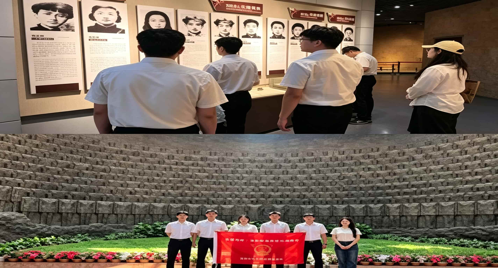
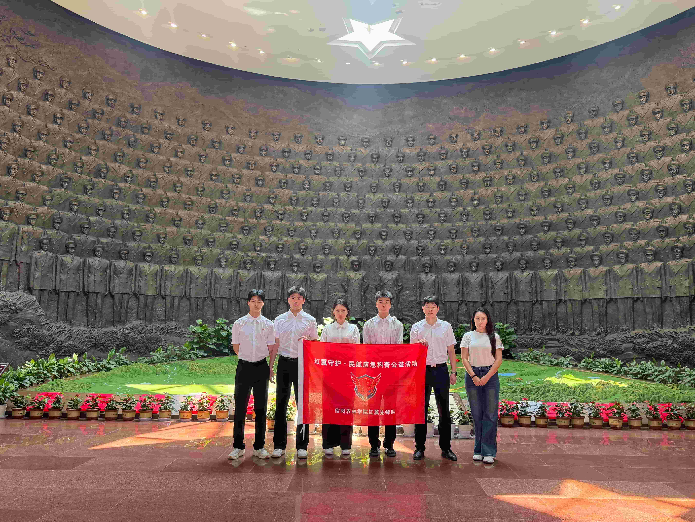
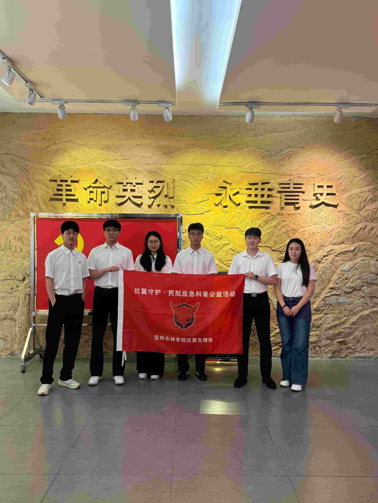
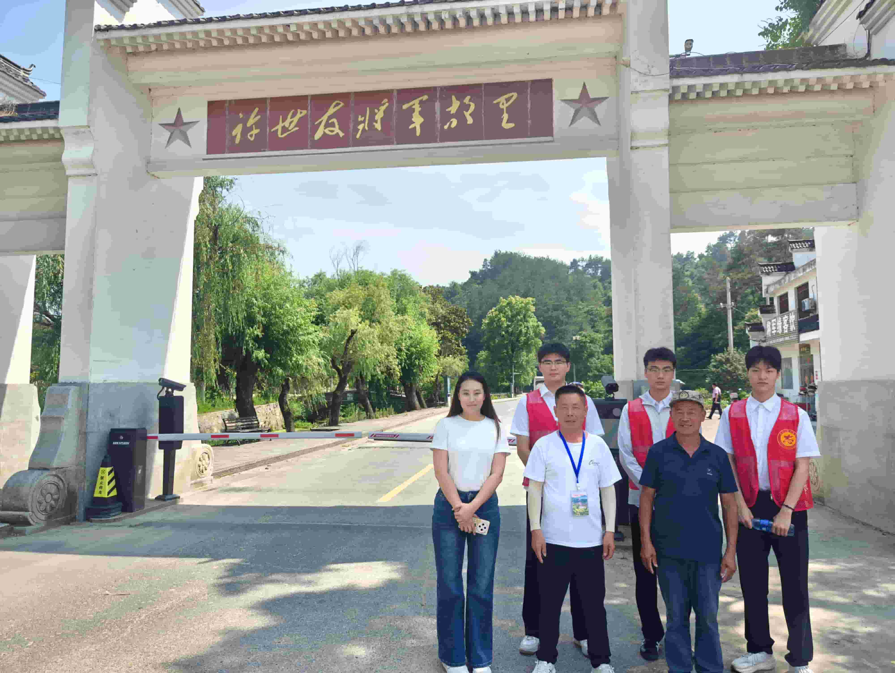
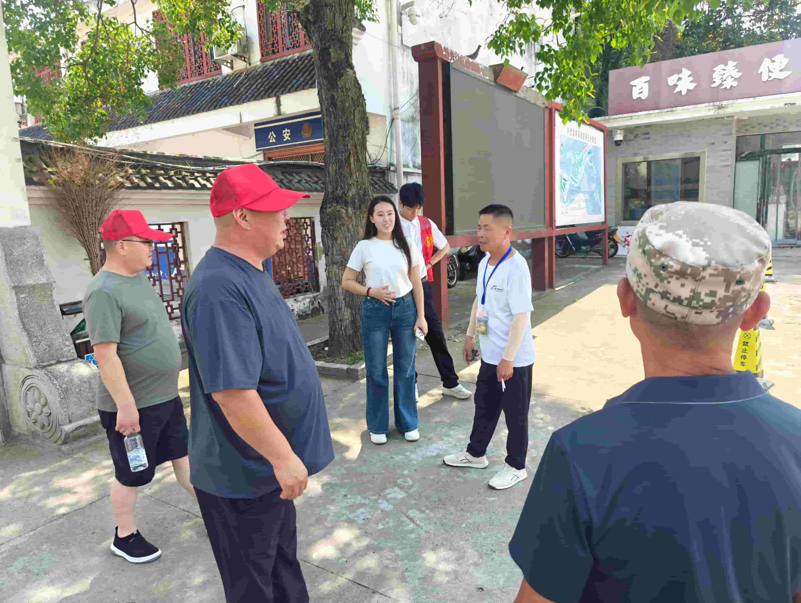
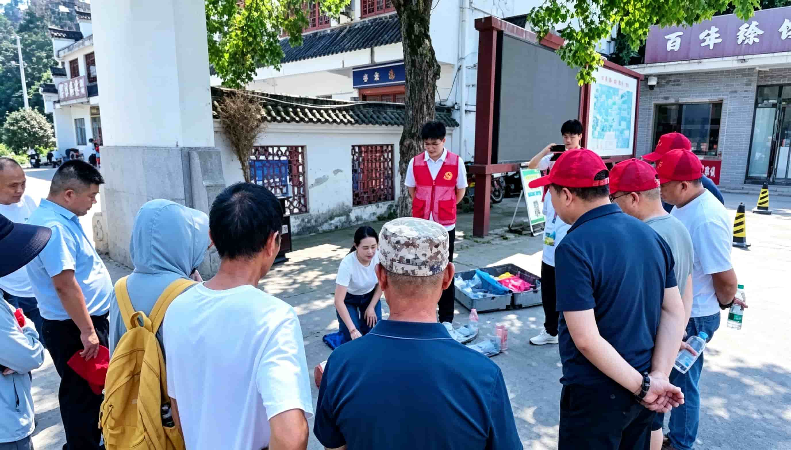
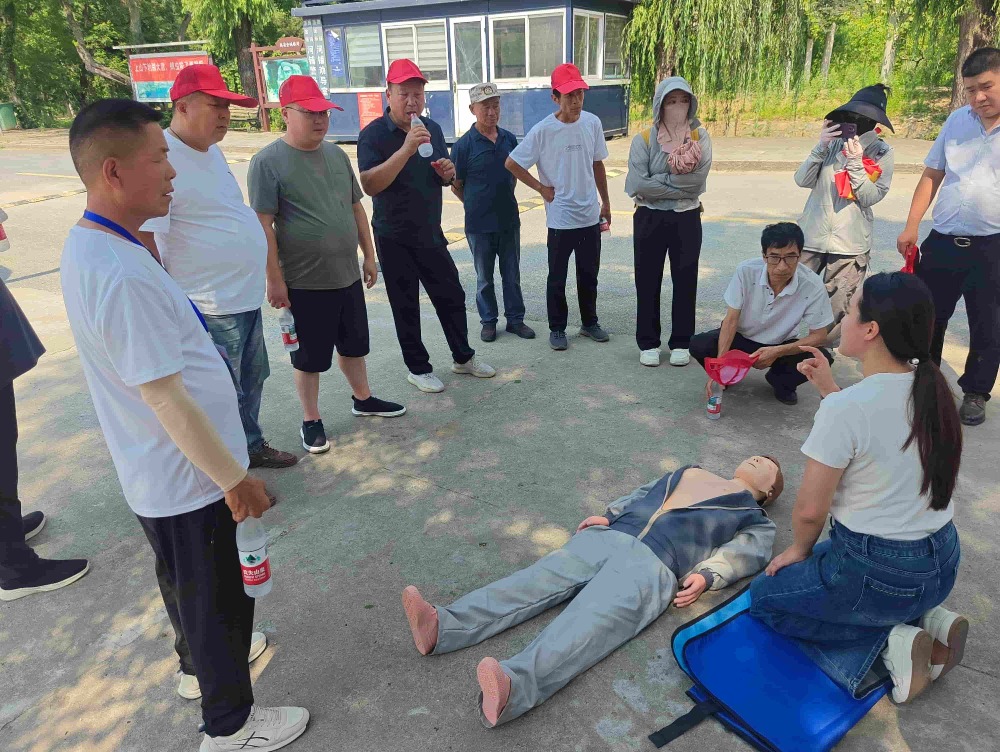

首页 / 活动纪实
躬行实践守初心，影像留痕记担当 —— 记录公益科普一线真实瞬间
走访鄂豫皖苏区首府革命博物馆、鄂豫皖苏区首府烈士陵园、许世友将军故里、郑维山将军故里、 李德生故居等红色地标，参观《大别山·红旗不倒》陈列与将帅馆，学习许世友、吴焕先等 43 位新县籍开国将军的英雄事迹，完成红色文化调研与将军事迹挖掘。




深入许世友将军故里周边村庄入户访谈村民， 同时对景区工作人员进行访谈；并在田铺乡社区随机抽样 140 名居民开展问卷调研， 形成"85% 居民从未接受急救培训""92% 不了解海姆立克""78% 遇晕倒者第一反应是扶起来"等一手数据。

在许世友将军故里景区周边社区开展试点宣讲，6 名核心成员严格按六步法执行： 红色故事导入（5 分钟，讲述许世友将军战场自救经历）→ 海姆立克急救法教学（10 分钟，"剪刀、石头、布"口诀 + 慢动作示范 + 分组练习） → 心肺复苏教学（20 分钟，胸外按压 + 人工呼吸）→ 互动答疑（5 分钟）。 现场社区居民、景区工作人员及部分游客共 30 余人参与，收集 10 余条有效反馈。


技能分站教学 → 模拟演练纠错。
视频无法播放：videos/clip-1.mp4 不存在，或编码不是浏览器支持的 H.264 + AAC（手机/剪辑软件常导出 H.265/HEVC，网页放不了）。转码方法见 videos\README.txt。
红色地标走访、将军事迹挖掘影像记录。
视频无法播放：videos/clip-2.mp4 不存在，或编码不是浏览器支持的 H.264 + AAC（手机/剪辑软件常导出 H.265/HEVC，网页放不了）。转码方法见 videos\README.txt。